เด็กพรีเทอมคืออะไร
เด็กพรีเทอม หรือทารกคลอดก่อนกำหนด หมายถึงทารกที่คลอดก่อนอายุครรภ์ครบ 37 สัปดาห์ ตามนิยามของ WHO
Premie 4S
เว็บให้ความรู้สำหรับพยาบาลและนิสิตพยาบาล เรื่องการดูแลทารกคลอดก่อนกำหนดก่อนเข้าสู่การกินนมทางปาก
ทำความเข้าใจเหตุผลที่ทารกคลอดก่อนกำหนดต้องได้รับการประเมินและกระตุ้นอย่างเหมาะสม
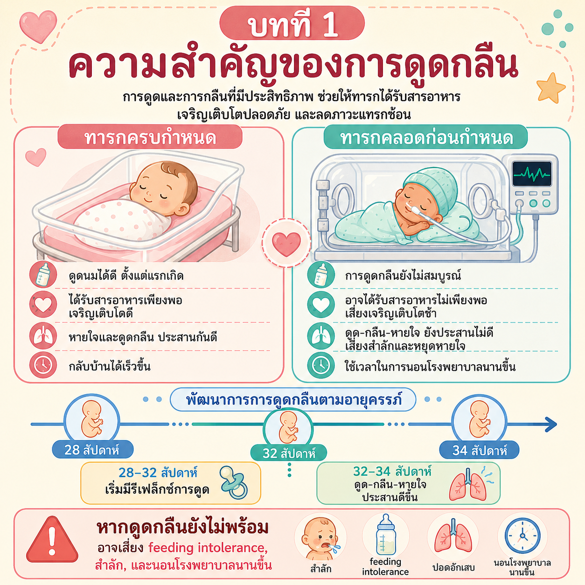
เด็กพรีเทอม หรือทารกคลอดก่อนกำหนด หมายถึงทารกที่คลอดก่อนอายุครรภ์ครบ 37 สัปดาห์ ตามนิยามของ WHO
รีเฟล็กซ์การดูดเริ่มตั้งแต่ประมาณ 28-32 สัปดาห์ แต่การประสาน "ดูด-กลืน-หายใจ" จะสมบูรณ์มากขึ้นเมื่อประมาณ 32-34 สัปดาห์เท่านั้น
การนวดกระตุ้นช่องปากช่วยลดเวลาการเปลี่ยนผ่านสู่การกินนมทางปากและระยะเวลานอนโรงพยาบาลได้
เช็คทีละข้อก่อนเริ่มกระตุ้น เพื่อให้การฝึกสอดคล้องกับสภาพทารกในขณะนั้น
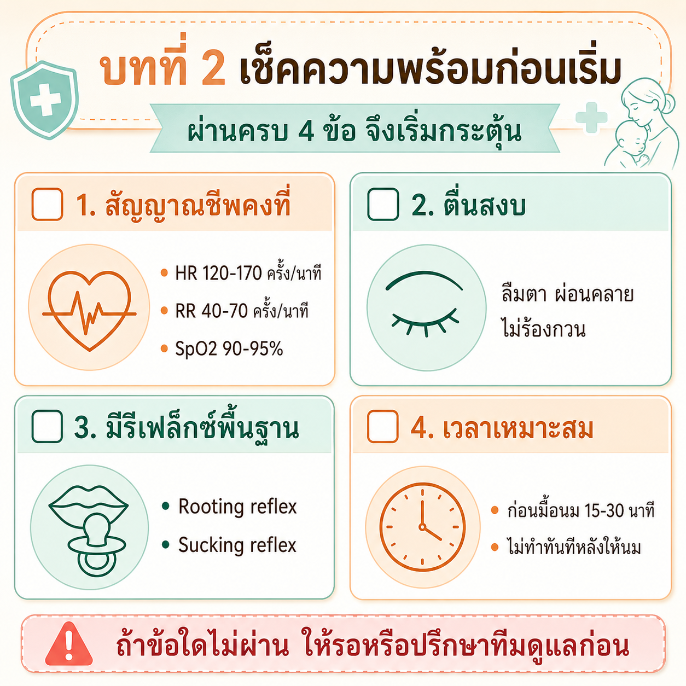
เช็คสัญญาณชีพก่อนเริ่มทุกครั้ง
ควรอยู่ในภาวะตื่นสงบ ลืมตา ตัวผ่อนคลาย ไม่ร้องกวน และไม่ใช่ช่วงหลับลึก
ควรกระตุ้นก่อนมื้อนมถัดไป 15-30 นาที และไม่ทำทันทีหลังให้นมภายใน 30 นาที
เลือกสถานการณ์ที่คิดว่าสามารถเริ่มกระตุ้นได้ แล้วดูเฉลยก่อนเข้าสู่บทที่ 3
เลือกสถานการณ์เพื่อดูเฉลย
เตรียมอุปกรณ์และสภาพแวดล้อมให้พร้อมก่อนสัมผัสทารกทุกครั้ง
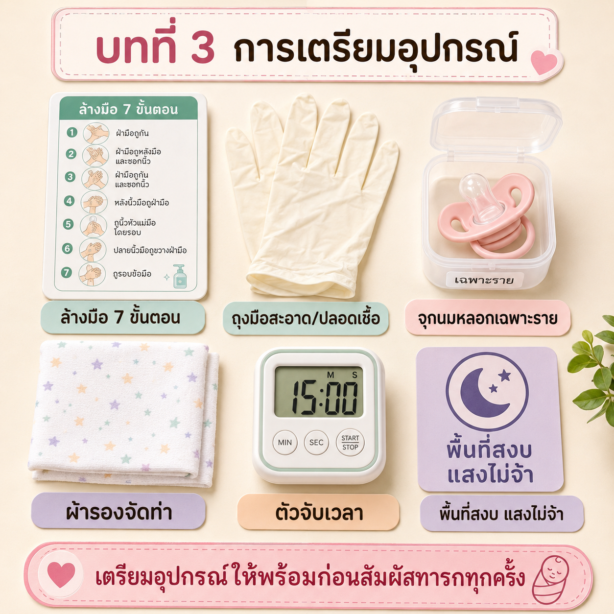
ติ๊กเลือกสิ่งที่ต้องเตรียมให้ครบ ระวังตัวเลือกหลอก แล้วกดยืนยันเพื่อดูเฉลย
โปรแกรมตามแนวทาง Fucile, Gisel และ Lau (2002) ร่วมกับ Rocha et al. (2007)
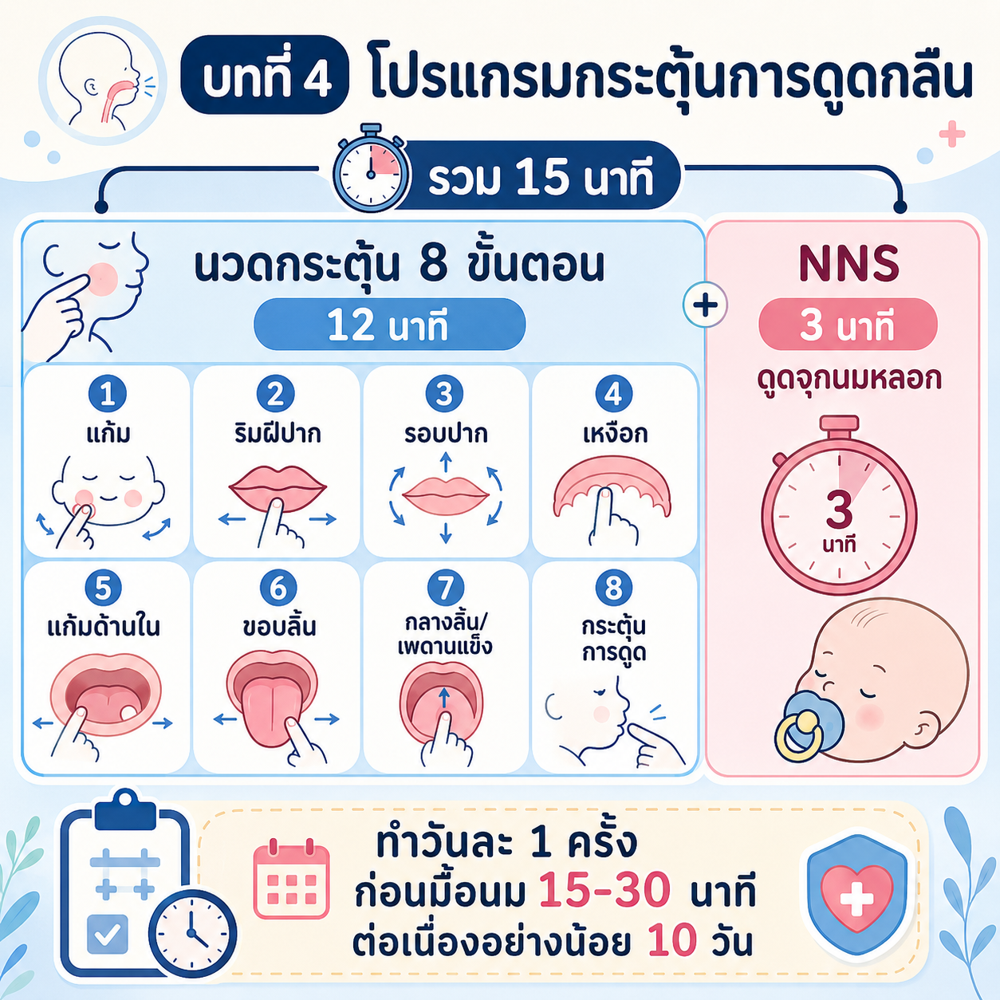
โปรแกรมกระตุ้นการดูดกลืนตามแนวทางของ Fucile, Gisel และ Lau (2002) ประกอบด้วยการนวดกระตุ้นด้วยนิ้วอย่างเป็นระบบ 12 นาที ตามด้วยการดูดจุกนมหลอก 3 นาที รวม 15 นาที ทำวันละ 1 ครั้ง ก่อนมื้อนม 15-30 นาที ต่อเนื่องอย่างน้อย 10 วัน สอดคล้องกับ Rocha et al. (2007)
ระยะเวลา 2 นาที
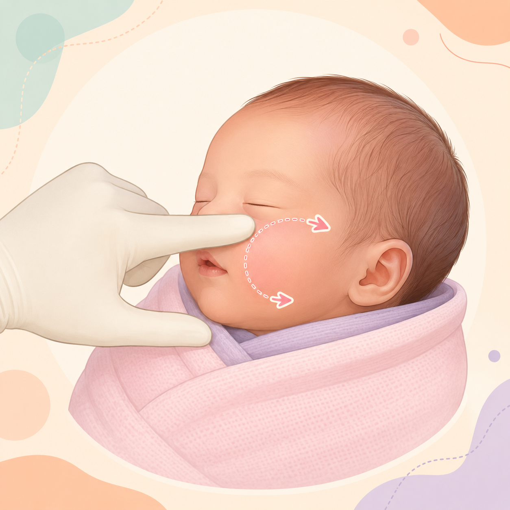
โดยวางนิ้วชี้บริเวณฐานจมูก ออกแรงกดแล้วเคลื่อนนิ้วไปทางใบหู แล้วเลื่อนลงมาทางมุมปากเป็นรูปตัวอักษร "C" ทำซ้ำ 4 ครั้ง ใช้เวลา 2 นาที
ระยะเวลา 1 นาที

โดยวางนิ้วชี้บริเวณมุมปากด้านบน ออกแรงกดเคลื่อนนิ้วแบบหมุนวน (Circular motion) จากมุมปากด้านซ้ายผ่านตรงกลาง หยุดที่มุมปากด้านขวา จากนั้นกลับทิศทางจากด้านขวาไปซ้าย ทำซ้ำ 4 ครั้ง ใช้เวลา 1 นาที
ริมฝีปากล่างทำเช่นเดียวกับริมฝีปากบน
ระยะเวลา 1 นาที
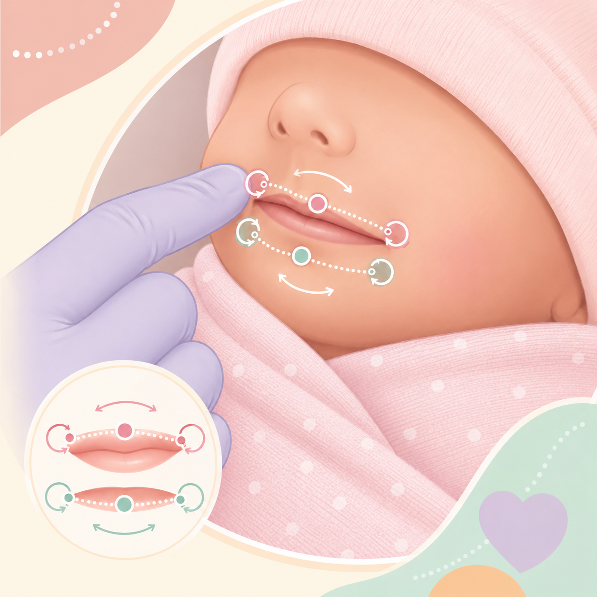
โดยวางนิ้วชี้จากกึ่งกลางรอบริมฝีปาก ออกแรงกดแล้วเคลื่อนไปถึงมุมปากทั้งด้านซ้ายและขวา ทำทั้งรอบริมฝีปากบนและล่าง ทำซ้ำ 2 ครั้ง ใช้เวลา 1 นาที
ระยะเวลา 1 นาที
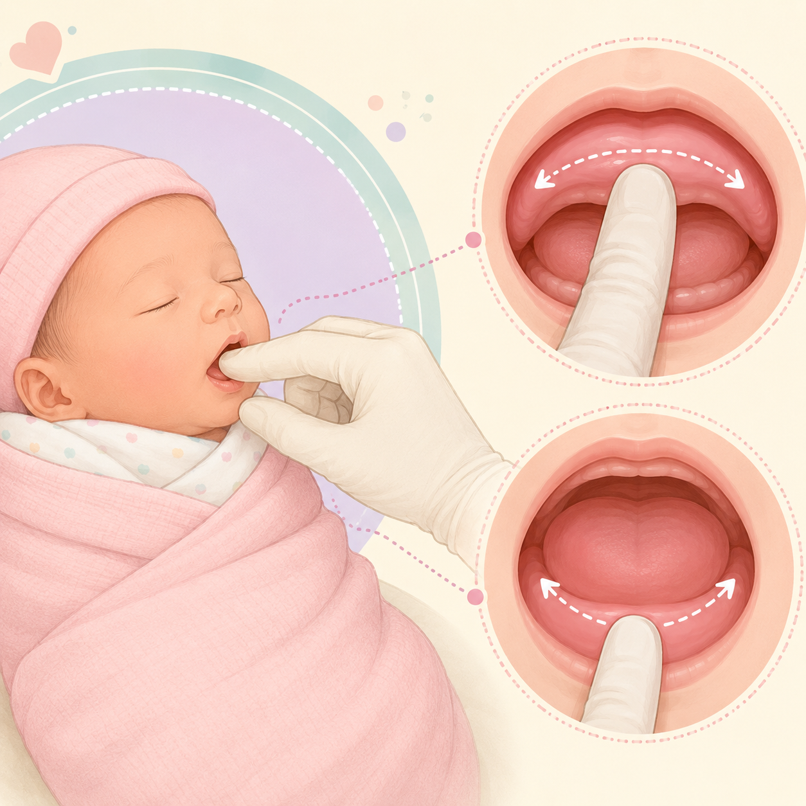
โดยวางนิ้วก้อยตรงกลางเหงือก กดเบา ๆ แล้วเคลื่อนนิ้วช้า ๆ เข้าไปด้านในปาก ลากนิ้วกลับมาตรงกลางเหงือกเหมือนเดิม
ทำเช่นเดียวกันทั้งด้านซ้ายและด้านขวา ทำซ้ำ 2 ครั้ง ใช้เวลา 1 นาที
ระยะเวลา 2 นาที
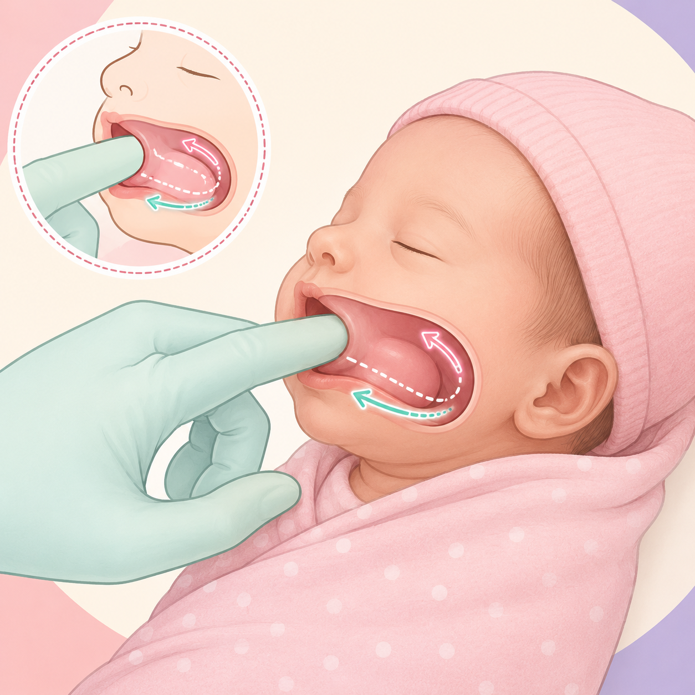
โดยวางนิ้วก้อยที่มุมปากด้านใน กดและเคลื่อนนิ้วเข้าไปด้านในถึงกราม แล้วเคลื่อนนิ้วกลับ
ทำเช่นเดียวกันทั้งด้านซ้ายและด้านขวา ทำซ้ำ 2 ครั้ง ใช้เวลา 2 นาที
ระยะเวลา 1 นาที
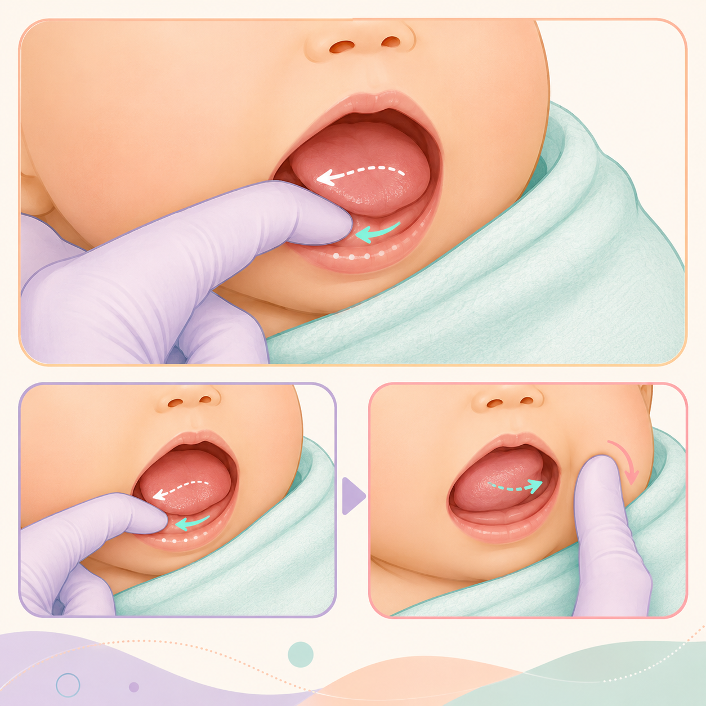
โดยวางนิ้วก้อยที่กรามระหว่างขอบลิ้นกับเหงือกล่าง เคลื่อนนิ้วมาตรงกลางและดันลิ้นไปด้านตรงข้าม จากนั้นเลื่อนไปที่กระพุ้งแก้มแล้วกดกระพุ้งแก้ม
ทำเช่นเดียวกันทั้งด้านซ้ายและด้านขวา ทำซ้ำ 2 ครั้ง ใช้เวลา 1 นาที
ระยะเวลา 1 นาที
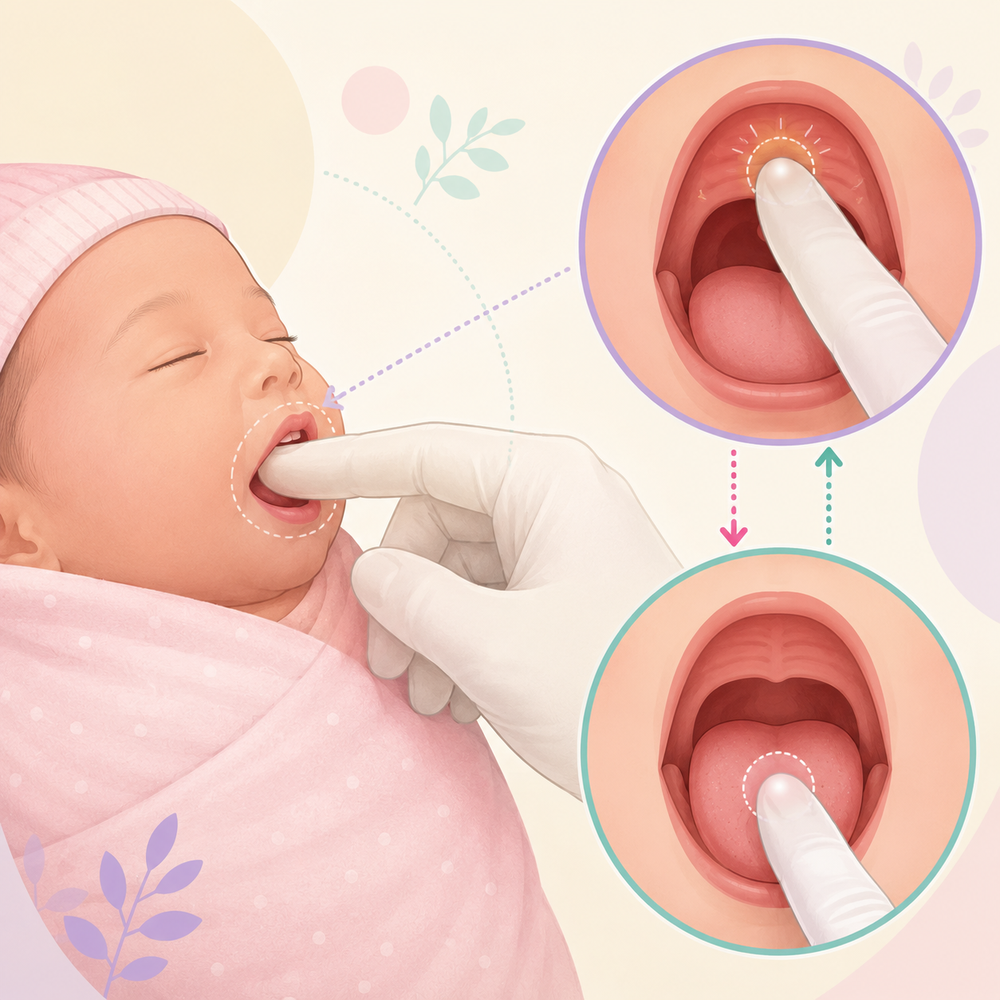
โดยวางนิ้วชี้ตรงกลางปาก กดเพดานแข็งค้างไว้ 3 วินาที แล้วเคลื่อนนิ้วลงมาแตะกลางลิ้นและกดลง จากนั้นเคลื่อนนิ้วกลับไปแตะเพดานแข็งทันที
ทำซ้ำ 4 ครั้ง ใช้เวลา 1 นาที
ระยะเวลา 1 นาที
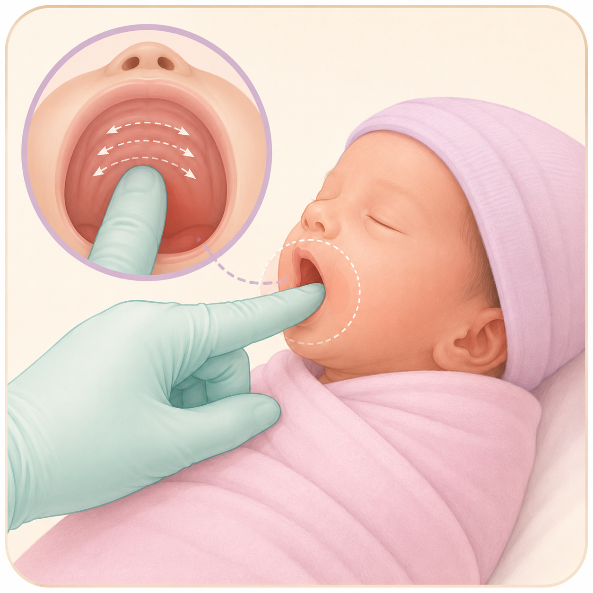
โดยวางนิ้วก้อยที่เพดานปากแล้วลูบเบา ๆ เพื่อกระตุ้นการดูด
ใช้เวลา 1 นาที
ระยะเวลา 3 นาที
ให้ทารกดูดจุกนมปลอม 3 นาที
แบบทดสอบหลังเรียน 5 ข้อ ข้อละ 3 ตัวเลือก